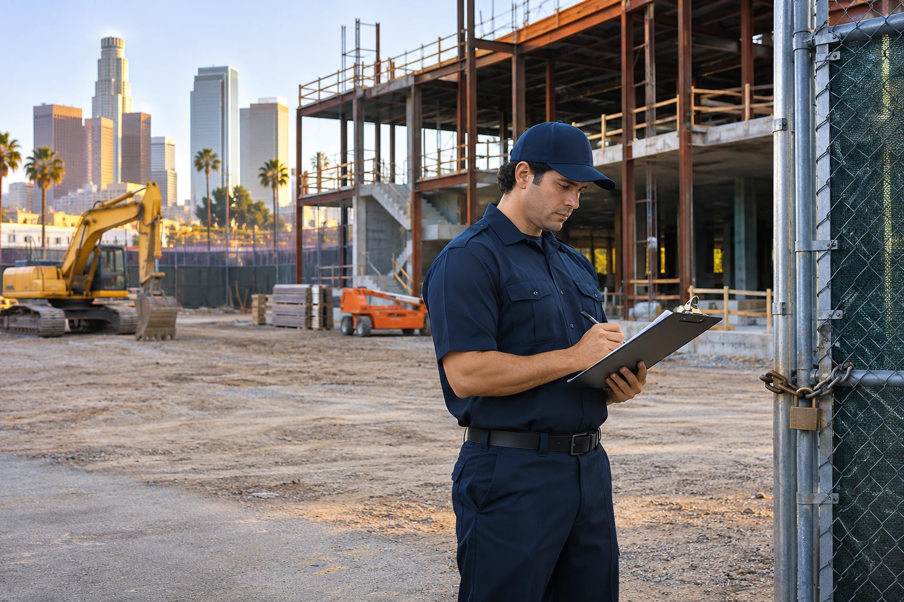

Construction Site Security Costs and Coverage Options in Los Angeles

Construction projects change every week. An empty parcel becomes a staging area, then a partially enclosed structure, then a building full of installed equipment and valuable materials. The security plan should change with those conditions rather than remain a generic line item in the budget.
Scope coverage around the stage of construction
Early work may require controlling vehicle entry and observing material storage areas. Later phases can introduce installed fixtures, wiring, tools, subcontractor access, and multiple open points around the building. A site that is busy during the day may be very different after crews leave.
Before requesting a quote, describe the current project stage, fence and gate layout, working hours, storage locations, recent incidents, and whether work continues after dark. A security provider cannot accurately define duties from a street address alone.
Compare fixed guards and patrol arrangements
A fixed post offers continuous presence at a particular location during scheduled hours. Mobile patrol can cover areas at planned intervals, but it should not be represented as continuous guarding at every entrance. Some projects may require a combination when equipment exposure and property size justify it.
Clarify whether the guard is expected to document vehicle movements, observe access points, conduct perimeter rounds, report property damage, or follow a defined escalation process. These tasks require explicit agreement, and the security company should explain what is and is not included.
Understand cost drivers
The type of guard, number of personnel, hours of coverage, property size, access points, and length of the assignment all affect a proposal. Paradigm Security's approved rates include $30 per hour for unarmed guarding, $45 per hour for armed guarding, and $70 per hour for Emergency Response Security Patrol Vehicle with Armed Guard. The appropriate final contract must be quoted for the site and schedule.
Comparing rates without matching service duties can mislead a contractor. A scheduled patrol and a continuously staffed overnight post are not the same service. Neither should be assumed to include construction management or site safety inspections.
Reporting helps the project team respond
Contractors and property owners benefit from defined reporting. A guard's observations about gates, trespass concerns, unusual activity, or visible damage can help management decide what needs attention. Ask how incidents are recorded, who receives the information, and how emergency issues are escalated.
Security personnel should operate within their assigned duties. Site safety compliance, contractor supervision, and emergency services remain separate responsibilities.
Verify the provider and agreement
California regulates relevant security firms and guard personnel through BSIS. Verify the provider's status, review the proposed duties and hours, and understand what happens when the project schedule changes.
Paradigm Security offers coverage for construction sites in its service area. Request a Quote with the project stage, location, coverage window, and access concerns so the proposed security service contract reflects the site you actually need protected.